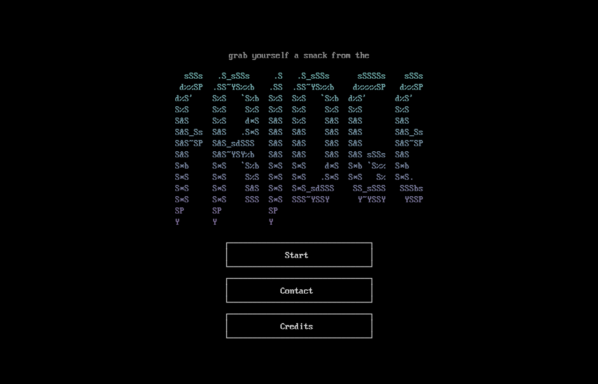
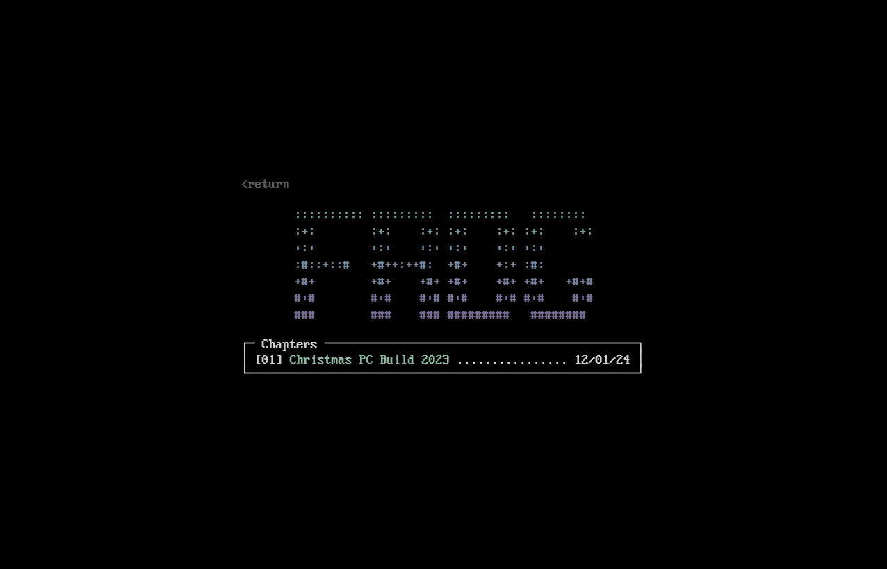
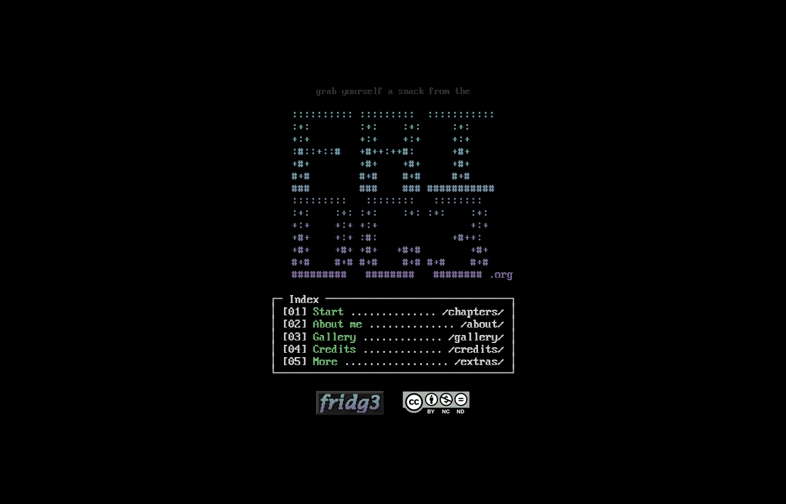
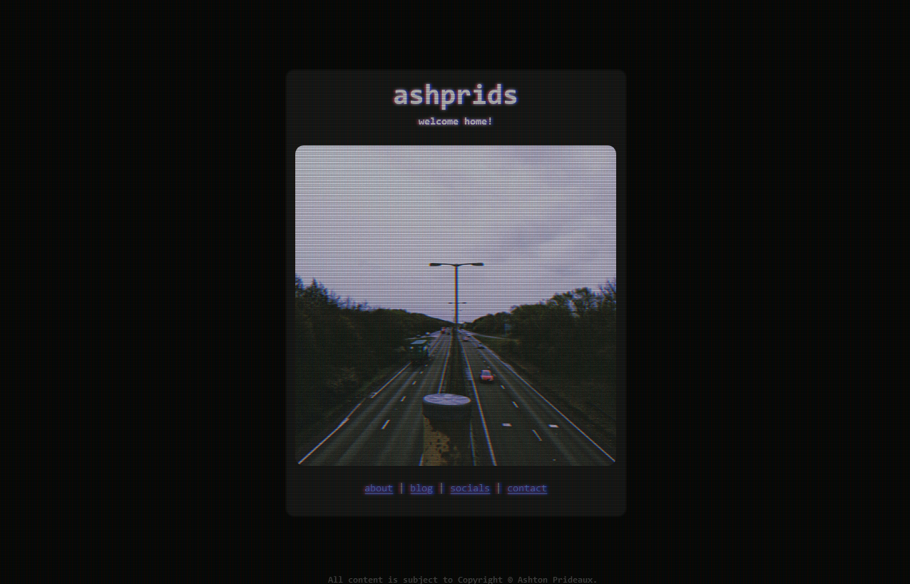
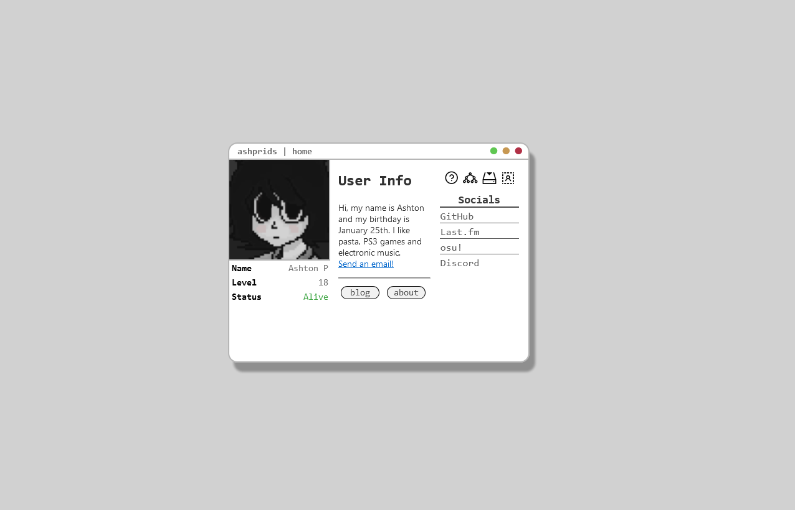
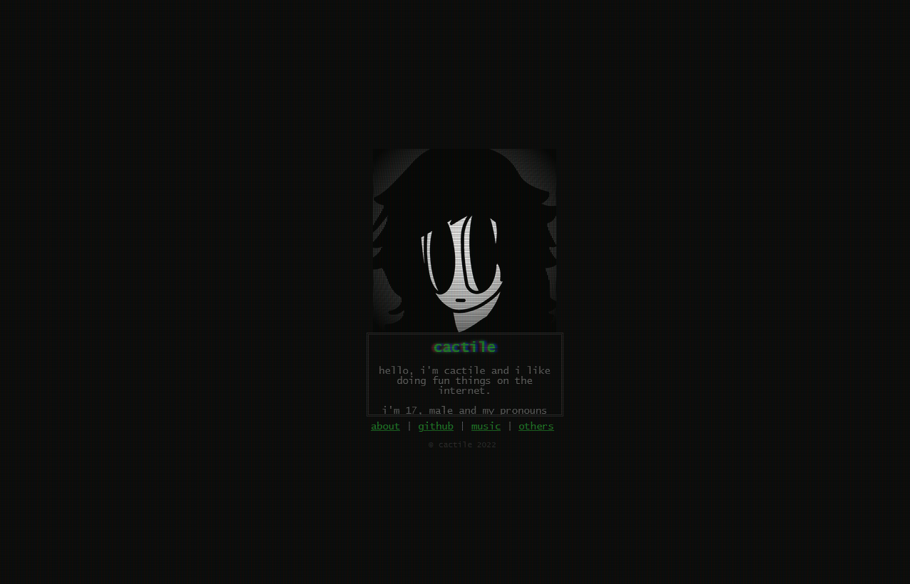

Learn about me
As much as I regret to inform you all, my real name isn't actually Fridge.
I know that would be REALLY awesome, but it just wasn't meant to be. My name's Ashton.
The origin of "fridge" comes from the name "doug", weirdly enough. I was in search
for a cool looking name for my Steam account (after seeing someone called "doug" in a tf2
video) and the name "fridge" came around somehow. I like how the word looks and how it sounds,
so I stuck with it.
As for everything non-fridge, I was born in 2005 in Northern Ireland and I'm currently living in England doing a placement year in Cloud Infrastructure,
though I'll possibly switch to a more programming-oriented career in the future (cus i like Python and I'm good at it).
I also occasionally do other things too! Such as this website, some music
and I (basically) run robloxforum.com (est 2018). My main passion is this website, I spend a LOT of hours working on, refining and adding to it, so if you're a fan of it then
I also really like this colour.
If you're interested in my projects, check out the projects page at the top of
every page. If you want to contact me, check out the contact page. If you want to read my blog, check out the blog page.
Simple stuff. You're learning so fast! Good boy.
If you'd like notifications for anything published here, join the Discord and select some roles in #information.
Learn about fridg3.org
This website has a GitHub repository, where updates are made and then automatically applied to the webserver using GitHub Actions.
Check out the repository: https://github.com/ashprids/fridg3.org
If you'd like notifications for anything published here, join the Discord and select some roles in #information.
History
fridg3.org was officially available to the public under its current domain on the 12th
of January, 2024. It included a blog, a contact page and a credits page.
Here's what those pages looked like
(click on any image to enlarge):


The other pages weren't too much to look at, basically just the same thing with
slightly different content.
It was released with the first blog post, still available
today! But it wasn't called a blog post, it was called a "chapter". I originally had this
idea of making my website some sort of alternate reality gig, but that idea grew old on me
over time.
The website used ASCII characters as shapes rather than containers until the rework later in the
year.
After a few months of changes, the final version of this style looked like this:

I'm still a huge fan of this design! But,
as mentioned in the blog,
I wanted to make the website easier to work on and I wanted to go for a more minimal
style, so I did just that on the 2nd of August, 2024.
And here we are today.
But did you know, the history of fridg3.org goes back even further than that?
There are three designs I came up with before the one in January 2024.
The first one is the earliest, and also my first time using HTML and CSS to create
a proper project. Here is a picture of the only completed page:

I really like this one! It's minimal and has a cool flickering effect like a CRT monitor.
The second design I remember being quite complicated to make at the time.

It was inspired from another website I wouldn't be able to find for the life of me.
I'm not a huge fan of it looking back, but I must admit that the design is quite creative.
I made it so you could drag the "window" around.
The third and final iteration is as follows:

This one was inspired by the design of the first version of the website, but every page would look
the exact same with different text in the box. The box was scrollable, but I still think it's too small
to be practical for things like images.
And that's the history of fridg3.org! I hope you enjoyed reading about it. You can access the early versions
on this repository and you're free to use them to inspire
your own projects. If you do so, send me a message via email or Discord and let me know, I'd love to know
and help!
for providing us with a version control system that allows us to make quick and organized updates to the website
Without the awesome work of these people and groups, the website would suck.
{kind=link}
{kind=link}
{kind=link}
{kind=link}
{kind=link}
{kind=link}